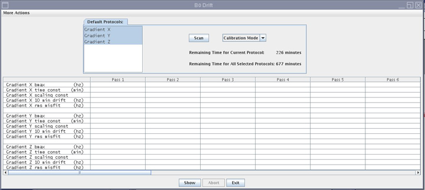
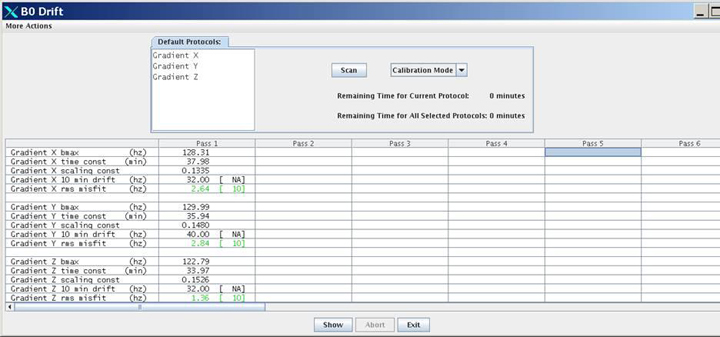

Operating Documentation
Direction 5670006, Rev# 1
Discovery MR750w GEM Service Methods
Module Version 3.0, Version Date 10/20/11
Operating Documentation |
| Required Persons | Preliminary Reqs | Procedure | Finalization |
|---|---|---|---|
| 1 | Not applicable | 12 hours | Not applicable |
Unwanted changes in the main magnetic field strength can occur when the spatially uniform field component is altered for a short term, during the process of scanning, or when the spatially uniform field component is permanently altered. This is known as short-term B0 Drift. All MR systems that utilize passive shimming have B0 drift. However, the MR750w system has a much higher drift (up to 150hz/hr) as the magnet uses a 3.0T magnet and is passive shim only. Other systems, such as MR750 and MR450w, have lower B0 drift (less than 30hz/hr).
With short-term B0 drift, the main magnetic field returns to its original value after scanning stops. Given sufficient non-active time, short-term B0 drift is reversible. However, too much short-term drift can have an adverse impact on image quality. It can cause an image intensity shift during fMRI, TRICKS and VIBRANT MPH, and banding artifacts in SSPS-based sequences, such as FIESTA and COSMIC. Short-term B0 Drift shall not exceed 30 Hz/10 min. This requirement is for the 3TLC Magnet design and the G3 magnet design, regardless of temperature variants.
The B0 Drift Tool characterizes the B0 drift of a given magnet by monitoring the frequency of the system during a high power scan. The tool’s compensation factor is applied to any scan that effects B0. The B0 Drift Tool is part of system calibration and is the last calibration executed during the installation process.
B0 drift is directly affected by the amount of Shim Steel in the magnet. This calibration should be good for the life of the system.
| Item | Qty | Effectivity | Part# | Manufacturer | |
|---|---|---|---|---|---|
| Body TLT Phantom and Sphere | 1 | - | 2360037 | - | |
No general safety information.
| Condition | Reference | Effectivity |
|---|---|---|
All other applicable calibrations must be complete. | - | - |
Place the TLT phantom and sphere on the table as shown in the illustration below. Position the phantom in the center of the cradle and center it on the P.A. coil. To achieve the best test measurement, the phantom must be located in the center (long direction) of the cradle.
Illustration 1: TLT Phantom and Sphere on MR Table

| NOTE: | The MR table in the photograph is a GEM table. A non-GEM table is also valid for this configuration. If you are using the non-GEM configuration, the Service Filler Panel must be used to raise the phantom to the proper height. |
Start the B0 Drift Calibration Tool.
(Restricted Service tools available to GE Field Service) Make sure your service key is installed.
Select Calibration Wizard from the Calibration Menu and Click here to start this tool. The Calibration Wizard starts.
Select B0 Drift Calibration from the menu. Review and OK the pre- and post-dependencies, Select Click here to start this tool.
If you are unable to start the Restricted Service tools, use the non-proprietary method in Step 2.b.
(Non-proprietary Service Tools) From the Common Service Desktop, select Calibration > B0 Drift Calibration from the Calibration menu. Select Click here to start this tool.
The B0 Drift window appears.
Illustration 2: B0 Drift Window with X, Y, and Z Axes Highlighted

The calibration is valid only if all three axes are processed together. Verify that all three axes are selected. If necessary, highlight the axis that is not selected by moving the cursor over the axis while pressing the <Shift> key and left-clicking.
Select Calibration Mode.
Press[Scan].
B0 Drift Calibration requires 677 minutes (total time) to process. Wait 30 minutes to confirm that the B0 Drift Scan is working properly before you leave the site.
When B0 Drift Calibration completes, a screen displays the data for each axis.
Illustration 3: Data from B0 Calibration

Select [Exit] to save results and exit the B0 Drift Tool. Troubleshoot any calibration failures.
| NOTE: | To troubleshoot any calibration failures, use the procedure in B0 Drift Functional Check |
No finalization steps.